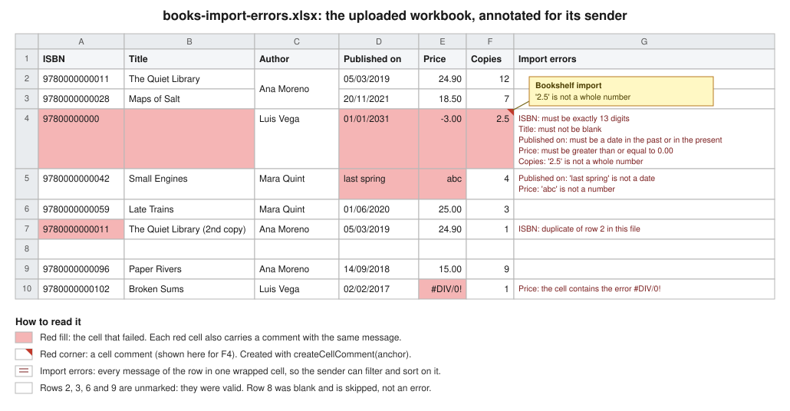

Importing Data from Excel
|
This content was generated with the assistance of AI and should be verified against the official documentation before being relied on in production. The reference material consulted while preparing these pages is listed in the section bibliography. |
Baseline date: 2026-10-09. This page was written against Apache POI 5.5.1 (the latest release on that date; 6.0 is
announced but has not been released, so what it says about 6.0 is expected, not shipped), Java 21 and later, Spring Boot
4.1.1 on Spring Framework 7, Jakarta EE 11 (Servlet 6.1, Validation 3.1), Hibernate Validator 9.1 and Quarkus 3.40. Every
Java class below was compiled against those versions, the Spring Boot application was started and called with curl,
and the outputs marked as observed come from those runs. The Quarkus resource and the Servlet were compiled but not
deployed.
Importing a spreadsheet is not "read the cells". A user uploads books-import.xlsx, a person edited it by hand, and the
server has to decide, row by row, what is data, what is a mistake and what to tell the person about the mistakes. This
page builds one complete import for the Bookshelf scenario and keeps every decision visible:
-
an upload endpoint that stores the bytes safely and applies size limits;
-
a reader that finds columns by their header name, so reordering columns does not break the import;
-
a coercion layer that turns any cell (a date typed as text, a number stored as text, a formula, a merged cell) into one canonical text, and then into a typed value;
-
Jakarta Bean Validation per row, with Excel row numbers in the messages;
-
duplicate detection inside the file and against the database, and idempotency for a file that is uploaded twice;
-
all-or-nothing or partial import, in one transaction with batched inserts;
-
an error report the sender can act on, as JSON and as an annotated copy of the workbook.
The page reads the file, but it deliberately does not repeat what other pages of the section already document. The usermodel API is in Spreadsheet Usermodel Basics, the date and number rules in Dates, Numbers & DataFormatter, the event API in Streaming Reads: Event & SAX APIs, and everything about hostile files (zip bombs, XXE, magic numbers, macros, timeouts) in Security & Untrusted Files. This page assumes that upload validation and links to it at the point where it belongs. The matching import of Word forms, and the batch-job version of this import, are covered by other pages of the section.
The import pipeline
Every import has the same stages, whatever the framework. The figure below is the one the rest of the page follows, and each stage has a section.
Three rules shape the design, and each one is a lesson the code below makes visible:
-
Parse first, write later. Nothing touches the database until the whole sheet has been read and validated, so a bad file never leaves half a catalogue behind, and the sender gets every problem in one answer instead of one problem per attempt.
-
The row number is the user interface. The sender knows "row 17" because Excel shows it. Every message carries the 1-based row number as Excel displays it, never a zero-based index.
-
A file is hostile until proven otherwise, and so is a cell. The page stores the upload in a private temporary file, never uses the client file name, never returns the parser’s own exception text, and treats every cell value as untrusted input to validation and to the SQL layer (parameters only).
The running example
The Bookshelf catalogue upload is books-import.xlsx: one sheet, a header row, then one book per row. The columns are
found by name, so the order in the file does not matter, and extra columns are ignored.
| Header | Type | Bean property | Rules |
|---|---|---|---|
|
text |
|
Required, exactly 13 digits. Unique in the catalogue. |
|
text |
|
Required, at most 200 characters. |
|
text |
|
Required, at most 120 characters. Often a merged cell when one author wrote several consecutive books. |
|
date |
|
Required, a real Excel date or an ISO |
|
decimal |
|
Required, zero or more, at most 6 integer digits and 2 decimals. May be a formula. |
|
whole number |
|
Required, between 0 and 10000. |
The file used for every output on this page is the one below: nine rows under the header, written to exercise each
case. Row 3 has its author in a merged cell shared with row 2, row 6 has a formula for the price, row 8 is blank, row 9
has an ISBN stored as a number and row 10 has a formula that evaluates to #DIV/0!.
| Row | ISBN | Title | Author | Published on | Price | Copies |
|---|---|---|---|---|---|---|
2 |
|
The Quiet Library |
Ana Moreno (merged with row 3) |
05/03/2019 (a date cell) |
24.90 |
12 |
3 |
|
Maps of Salt |
(merged cell) |
20/11/2021 (a date cell) |
18.50 |
7 |
4 |
|
(empty) |
Luis Vega |
01/01/2031 |
-3.00 |
2.5 |
5 |
|
Small Engines |
Mara Quint |
|
|
4 |
6 |
|
Late Trains |
Mara Quint |
01/06/2020 |
formula, 25.00 |
3 |
7 |
|
The Quiet Library (2nd copy) |
Ana Moreno |
05/03/2019 |
24.90 |
1 |
8 |
(blank row) |
|||||
9 |
|
Paper Rivers |
Ana Moreno |
14/09/2018 |
15.00 |
9 |
10 |
|
Broken Sums |
Luis Vega |
02/02/2017 |
formula, |
1 |
Rows 2, 3, 6 and 9 are valid. Row 4 has five problems, row 5 has two, row 7 repeats the ISBN of row 2, row 10 has an error value, and row 8 must be skipped without comment.
The dependencies are POI, the Jakarta Validation API with an implementation, and (for the JDBC part) Spring’s JDBC support. In a Spring Boot application the starters bring the rest.
<dependencies>
<dependency>
<groupId>org.apache.poi</groupId>
<artifactId>poi-ooxml</artifactId>
<version>5.5.1</version>
</dependency>
<dependency>
<groupId>org.springframework.boot</groupId>
<artifactId>spring-boot-starter-webmvc</artifactId>
</dependency>
<dependency>
<groupId>org.springframework.boot</groupId>
<artifactId>spring-boot-starter-validation</artifactId>
</dependency>
<dependency>
<groupId>org.springframework.boot</groupId>
<artifactId>spring-boot-starter-jdbc</artifactId>
</dependency>
</dependencies>dependencies {
implementation("org.apache.poi:poi-ooxml:5.5.1")
implementation("org.springframework.boot:spring-boot-starter-webmvc")
implementation("org.springframework.boot:spring-boot-starter-validation")
implementation("org.springframework.boot:spring-boot-starter-jdbc")
}Source: POI component overview (poi-ooxml is the artifact for .xlsx) and
the Spring Boot application properties
for the starters. The setup details (lite jars, logging bridge) are on
Setup & Dependencies.
Outside Spring Boot, add jakarta.validation:jakarta.validation-api, an implementation such as
org.hibernate.validator:hibernate-validator and an Expression Language implementation for message interpolation
(org.glassfish.expressly:expressly). Spring Boot’s validation starter brings both.
Receiving the upload
All three frameworks do the same thing before your code runs: they parse the multipart/form-data body, enforce size
limits, and give you a handle on the uploaded part. What differs is the handle and where the limits live. In all three
cases the example copies the part to a private temporary file and hands the Path to the import code. That is a
deliberate choice rather than a convenience:
-
POI opens a
.xlsxmore safely and with less heap from aFilethan from anInputStream(the stream variant buffers the whole file first); -
the file can be read twice, once to hash it and once to parse it, and once more to write the annotated copy;
-
the temporary file is deleted in a
finallyblock, whatever happens.
The client-supplied file name and Content-Type are metadata to log, never to trust. Detecting the real type, the
extension allow-list and the zip checks are in
the upload validation section of the security page,
whose UploadValidator the examples below call at the commented line. The example controllers leave that call out only
to keep the code on this page about the import.
Spring MVC: MultipartFile and @RequestPart
Spring binds a multipart part to a MultipartFile with either @RequestPart("file") or @RequestParam("file"). They
behave the same for a file; @RequestPart is the one to use when another part carries JSON that must go through an
HttpMessageConverter (for example a part named options bound to a record), because only @RequestPart applies
message converters to the part. The controller below uses @RequestPart for the file and plain @RequestParam for two
small options, and it maps each outcome to a status code.
package bookshelf.imports;
import java.io.ByteArrayOutputStream;
import java.io.IOException;
import java.nio.file.Files;
import java.nio.file.Path;
import org.apache.poi.openxml4j.exceptions.InvalidFormatException;
import org.springframework.http.ContentDisposition;
import org.springframework.http.HttpHeaders;
import org.springframework.http.HttpStatus;
import org.springframework.http.MediaType;
import org.springframework.http.ProblemDetail;
import org.springframework.http.ResponseEntity;
import org.springframework.web.bind.annotation.ExceptionHandler;
import org.springframework.web.bind.annotation.PostMapping;
import org.springframework.web.bind.annotation.RequestMapping;
import org.springframework.web.bind.annotation.RequestParam;
import org.springframework.web.bind.annotation.RequestPart;
import org.springframework.web.bind.annotation.RestController;
import org.springframework.web.multipart.MultipartFile;
@RestController
@RequestMapping("/api/books")
public class BookImportController {
static final MediaType XLSX =
MediaType.parseMediaType("application/vnd.openxmlformats-officedocument.spreadsheetml.sheet");
private final BookImportService service;
private final ErrorWorkbookWriter errorWriter = new ErrorWorkbookWriter();
private final Path uploadDir;
public BookImportController(BookImportService service, Path uploadDir) {
this.service = service;
this.uploadDir = uploadDir; // a private directory, outside the web root
}
@PostMapping(path = "/import", consumes = MediaType.MULTIPART_FORM_DATA_VALUE)
public ResponseEntity<?> importBooks(@RequestPart("file") MultipartFile file,
@RequestParam(defaultValue = "ALL_OR_NOTHING") ImportMode mode,
@RequestParam(defaultValue = "json") String format) throws IOException {
if (file.isEmpty()) {
return ResponseEntity.badRequest().body(ProblemDetail.forStatusAndDetail(HttpStatus.BAD_REQUEST, "No file."));
}
Path stored = Files.createTempFile(uploadDir, "upload-", ".xlsx"); // never the client's file name
try {
file.transferTo(stored);
// validate type and size here: see "Security & Untrusted Files" (UploadValidator)
ImportReport report = service.importFile(stored, file.getOriginalFilename(), mode);
HttpStatus status = switch (report.status()) {
case "IMPORTED", "PARTIALLY_IMPORTED" -> HttpStatus.OK;
default -> HttpStatus.UNPROCESSABLE_ENTITY;
};
// a sheet-level error (rowsRead 0) answers JSON: the sheet may be over the row cap, so do not open it again
if ("xlsx".equals(format) && !report.errors().isEmpty() && report.rowsRead() > 0) {
ByteArrayOutputStream out = new ByteArrayOutputStream();
errorWriter.write(stored, report.errors(), out);
return ResponseEntity.status(status)
.contentType(XLSX)
.header(HttpHeaders.CONTENT_DISPOSITION,
ContentDisposition.attachment().filename("books-import-errors.xlsx").build().toString())
.header("X-Import-Status", report.status())
.body(out.toByteArray());
}
return ResponseEntity.status(status).body(report);
} catch (InvalidFormatException e) {
return ResponseEntity.unprocessableEntity()
.body(ProblemDetail.forStatusAndDetail(HttpStatus.UNPROCESSABLE_ENTITY, "Not a valid .xlsx file."));
} finally {
Files.deleteIfExists(stored);
}
}
@ExceptionHandler(UnreadableWorkbookException.class)
public ProblemDetail unreadable(UnreadableWorkbookException e) {
return ProblemDetail.forStatusAndDetail(HttpStatus.UNPROCESSABLE_ENTITY, e.getMessage());
}
@ExceptionHandler(AlreadyImportedException.class)
public ProblemDetail alreadyImported(AlreadyImportedException e) {
ProblemDetail problem = ProblemDetail.forStatusAndDetail(HttpStatus.CONFLICT, e.getMessage());
problem.setProperty("batchId", e.batchId());
return problem;
}
}Source: Spring MVC, Multipart Forms
and the MultipartFile Javadoc.
A few details of this controller are worth reading slowly:
-
file.transferTo(stored)moves or copies the part to the path. When the container has already spooled the part to disk it can be a cheap move; when the part was in memory it writes it. Either way the controller ownsstoredand deletes it. -
Files.createTempFile(uploadDir, "upload-", ".xlsx")chooses the name. The directory must be private to the service and outside any web root; see the temp-file rules on the security page. -
report.status()decides the HTTP status:IMPORTEDandPARTIALLY_IMPORTEDanswer 200, everything else 422. A duplicate upload is a 409 through the exception handler, and an unreadable workbook is a 422. -
The error workbook is built into a
ByteArrayOutputStreambecause it is bounded: it is written only when rows were read, and the reader reads no rows from a sheet over 20,000 rows. A sheet-level error (over the cap, a missing column) leavesrowsReadat 0, so the controller answers the JSON report even withformat=xlsxand never opens that upload a second time. For a larger bound, stream it withStreamingResponseBody, as the export pages of this section do.
The wiring is a handful of beans. The only one that is not obvious is the Path for the upload directory, which comes
from a property so that tests and production can differ.
package app;
import bookshelf.imports.*;
import jakarta.validation.Validator;
import java.io.IOException;
import java.nio.file.Files;
import java.nio.file.Path;
import org.springframework.beans.factory.annotation.Value;
import org.springframework.boot.SpringApplication;
import org.springframework.boot.autoconfigure.SpringBootApplication;
import org.springframework.context.annotation.Bean;
import org.springframework.context.annotation.Import;
import org.springframework.jdbc.core.JdbcTemplate;
import org.springframework.transaction.support.TransactionTemplate;
@SpringBootApplication
@Import(BookImportController.class)
public class BookshelfApplication {
public static void main(String[] args) {
SpringApplication.run(BookshelfApplication.class, args);
}
@Bean
BookRowMapper bookRowMapper(Validator validator) {
return new BookRowMapper(validator);
}
@Bean
BookSheetReader bookSheetReader(BookRowMapper mapper) {
return new BookSheetReader(mapper);
}
@Bean
BookRepository bookRepository(JdbcTemplate jdbc) {
return new BookRepository(jdbc);
}
@Bean
BookImportService bookImportService(BookSheetReader reader, BookRepository repository, TransactionTemplate tx) {
return new BookImportService(reader, repository, tx);
}
@Bean
Path uploadDir(@Value("${bookshelf.upload-dir}") Path dir) throws IOException {
return Files.createDirectories(dir);
}
}Source: Spring Boot application properties
and the Spring programmatic transaction management
reference (Spring Boot auto-configures the TransactionTemplate bean used above). The @Import is there only because
the controller lives in the bookshelf.imports package, outside the application class’s package.
The size limits are Spring Boot properties of the spring.servlet.multipart group:
spring.servlet.multipart.max-file-size=10MB
spring.servlet.multipart.max-request-size=12MB
spring.servlet.multipart.file-size-threshold=1MB
bookshelf.upload-dir=${java.io.tmpdir}/bookshelf-uploads| Property | Default | Effect |
|---|---|---|
|
|
The largest single part. A larger one fails the request with |
|
|
The largest whole request, all parts and form fields together. Keep it a little above |
|
|
Parts larger than this are written to disk by the container instead of being held in memory. |
|
the servlet container’s temp directory |
Where the container spools parts. Point it at the same private directory as the service’s uploads. |
|
|
When |
Observed with these settings (the 12,000,000-byte file is rejected before the controller runs):
$ head -c 12000000 /dev/zero > big.xlsx
$ curl -s -o /dev/null -w 'HTTP %{http_code}\n' -F "file=@big.xlsx" http://localhost:8765/api/books/import
HTTP 413Source: Spring Boot application properties (the
spring.servlet.multipart group). The proxy in front of the application has limits of its own (client_max_body_size
in nginx, for example); the smallest limit in the chain wins, and the client sees that proxy’s error page rather than the
JSON of this application.
Servlet: Part and @MultipartConfig
Without Spring, the Servlet API gives you the same thing through HttpServletRequest.getPart(name). A servlet that calls
getPart must be marked with @MultipartConfig (or declare the same settings in web.xml), otherwise the container
refuses to parse the body. The limits are attributes of the annotation.
package bookshelf.imports;
import jakarta.servlet.ServletException;
import jakarta.servlet.annotation.MultipartConfig;
import jakarta.servlet.annotation.WebServlet;
import jakarta.servlet.http.HttpServlet;
import jakarta.servlet.http.HttpServletRequest;
import jakarta.servlet.http.HttpServletResponse;
import jakarta.servlet.http.Part;
import java.io.IOException;
import java.io.InputStream;
import java.nio.charset.StandardCharsets;
import java.nio.file.Files;
import java.nio.file.Path;
@WebServlet("/servlet/books/import")
@MultipartConfig(
fileSizeThreshold = 1024 * 1024, // above 1 MiB the container spools the part to disk
maxFileSize = 10L * 1024 * 1024, // one part, 10 MiB
maxRequestSize = 12L * 1024 * 1024) // the whole request, 12 MiB
public class BookImportServlet extends HttpServlet {
private BookImportService service;
private Path uploadDir;
@Override
public void init() {
// the container calls the no-arg constructor, so take the collaborators from the context
service = (BookImportService) getServletContext().getAttribute(BookImportService.class.getName());
uploadDir = (Path) getServletContext().getAttribute("bookshelf.uploadDir");
}
@Override
protected void doPost(HttpServletRequest request, HttpServletResponse response) throws ServletException, IOException {
Part part = request.getPart("file"); // IllegalStateException when a size limit is exceeded
if (part == null || part.getSize() == 0) {
response.sendError(HttpServletResponse.SC_BAD_REQUEST, "No file.");
return;
}
Path stored = Files.createTempFile(uploadDir, "upload-", ".xlsx");
try (InputStream in = part.getInputStream()) {
Files.copy(in, stored, java.nio.file.StandardCopyOption.REPLACE_EXISTING);
ImportReport report = service.importFile(stored, part.getSubmittedFileName(), ImportMode.ALL_OR_NOTHING);
response.setStatus(report.status().equals("REJECTED") ? 422 : 200);
response.setContentType("application/json");
response.setCharacterEncoding(StandardCharsets.UTF_8.name());
response.getWriter().write(ReportJson.toJson(report));
} catch (AlreadyImportedException e) {
response.sendError(HttpServletResponse.SC_CONFLICT, e.getMessage());
} finally {
Files.deleteIfExists(stored);
part.delete(); // release the container's own temporary copy
}
}
}Source: Jakarta Servlet 6.1 specification (section on multipart
configuration, @MultipartConfig, Part). A servlet declared with @WebServlet is instantiated by the container
through its public no-arg constructor, so it cannot take its collaborators as constructor arguments: the example reads
them in init() from context attributes that a ServletContextListener sets at startup (with CDI, @Inject fields do
the same). To pass them to a constructor instead, drop @WebServlet and register the instance with
ServletContext.addServlet, then call setMultipartConfig(new MultipartConfigElement(...)) on the returned
registration. ReportJson is a ten-line JSON writer included in the compiled project; in a
real application use JSON-B (jakarta.json.bind) or Jackson.
@MultipartConfig attribute |
Default | Effect |
|---|---|---|
|
|
Above this size the container writes the part to a temporary file, below it keeps it in memory. |
|
|
The largest single file. The servlet throws |
|
|
The largest request. The same exception when exceeded. |
|
|
The directory where the container writes parts. Absolute path; set it to a private directory. |
The defaults are unlimited, which is the opposite of Spring Boot’s defaults. A servlet without explicit limits accepts
any size the connector allows, so always set both. Two more points: Part.getSubmittedFileName() is the client’s
name and the same warning applies; and Part.delete() removes the container’s own temporary copy, which the example
calls so that a part spooled to location does not stay on disk until the container’s cleanup.
Quarkus: @RestForm and FileUpload
Quarkus REST (the Quarkus implementation of Jakarta REST, formerly RESTEasy Reactive) binds a multipart part to a
parameter annotated with @RestForm. A file arrives as org.jboss.resteasy.reactive.multipart.FileUpload: Quarkus has
already written it to the uploads directory, and uploadedFile() is the java.nio.file.Path of that file.
package bookshelf.imports;
import jakarta.inject.Inject;
import jakarta.ws.rs.Consumes;
import jakarta.ws.rs.DefaultValue;
import jakarta.ws.rs.POST;
import jakarta.ws.rs.Path;
import jakarta.ws.rs.Produces;
import jakarta.ws.rs.QueryParam;
import jakarta.ws.rs.core.MediaType;
import jakarta.ws.rs.core.Response;
import java.io.IOException;
import org.jboss.resteasy.reactive.RestForm;
import org.jboss.resteasy.reactive.multipart.FileUpload;
@Path("/api/books/import")
public class BookImportResource {
@Inject
BookImportService service;
@POST
@Consumes(MediaType.MULTIPART_FORM_DATA)
@Produces(MediaType.APPLICATION_JSON)
public Response upload(@RestForm("file") FileUpload file,
@QueryParam("mode") @DefaultValue("ALL_OR_NOTHING") ImportMode mode) throws IOException {
// Quarkus has already spooled the part to quarkus.http.body.uploads-directory and deletes it after the request
ImportReport report = service.importFile(file.uploadedFile(), file.fileName(), mode);
int status = report.status().equals("REJECTED") ? 422 : 200;
return Response.status(status).entity(report).build();
}
}The BookImportService is injected, so it needs a CDI producer, for example a @Produces method in an
@ApplicationScoped class that builds the reader from the injected jakarta.validation.Validator, the repository from a
JdbcTemplate-like adapter, and so on. The service class is plain Java and does not depend on Spring beyond the
transaction and JDBC helper used here; with Quarkus the same logic is usually written with Hibernate ORM with Panache or
a jakarta.transaction.UserTransaction (see the Quarkus pages of this site) and the import classes are unchanged.
The limits and the location are configuration properties:
quarkus.http.limits.max-body-size=12M
quarkus.http.body.uploads-directory=/var/lib/bookshelf/uploads
quarkus.http.body.delete-uploaded-files-on-end=true| Property | Default | Effect |
|---|---|---|
|
|
The largest request body. There is no per-file limit: with one file part, this is also the file limit. A larger request is answered with 413 by the HTTP layer. |
|
|
Where Quarkus stores the parts of |
|
|
Quarkus removes the uploaded files when the response is sent. With |
Source: Quarkus configuration reference (quarkus.http.limits.*, quarkus.http.body.*)
and Quarkus HTTP reference. Because Quarkus deletes the file when the
response ends, a handler that wants to keep the upload (to process it in a background job, for example) must copy it
somewhere else before returning. See the Quarkus pages of this site on REST services
and validation.
The limits side by side
| Question | Spring Boot | Servlet | Quarkus |
|---|---|---|---|
Largest file |
|
|
|
Largest request |
|
|
the same property |
Where parts are spooled |
|
|
|
Memory threshold |
|
|
(parts always go to disk) |
Failure signal |
|
|
413 from the HTTP layer |
Set the limit from what your files really look like, as the security page recommends. A workbook of 20,000 rows by 6
columns is typically well under a few megabytes, so a 10 MB limit is already generous for this catalogue. The byte limit
and the zip limits of the security page (ZipSecureFile) are what bound the memory of the parse: the row cap of the
reader (below) is checked with getLastRowNum() only after WorkbookFactory.create has loaded the sheet, so it bounds
the work that follows (mapping, validation, the database, the error list), not the parse itself. To refuse a long sheet
before loading it, read the sheet’s <dimension> element first, or use the SAX reader, whose heap does not grow with
the sheet.
Choosing the reader: usermodel or SAX
POI offers two ways to read an .xlsx, and the choice is about memory, not about convenience.
| Question | Usermodel (WorkbookFactory, XSSFWorkbook) |
Event/SAX (XSSFReader + XSSFSheetXMLHandler) |
|---|---|---|
Memory |
Loads the whole sheet as an object model; heap grows with the number of cells, many times the file size. |
Streams the XML; heap stays flat, the shared strings table aside. |
Random access |
Yes: any cell, any row, merged regions, |
No: rows arrive once, in order. Merged regions and cell comments have to be handled by hand. |
Cell types |
Typed access: |
Text only: the handler gives each cell as already formatted text. |
Formula cells |
Cached result or |
The cached result (or the formula text, by option). |
Code size |
Small, readable. |
A handler class, a few dozen lines. |
When |
Files you cap at some thousands of rows, forms and catalogues edited by people. |
Files of tens or hundreds of thousands of rows: bulk loads, exports from another system. |
Decide with two numbers: the row cap you are willing to accept, and the heap you can give to one import. Measure both on
your real files, because the cost per cell depends on the strings and styles in them (see
Streaming Reads: Event & SAX APIs for how to measure).
The Bookshelf catalogue upload is edited by hand, so the usermodel reader is the main path of this page, with a hard
cap of 20,000 rows (BookSheetReader.MAX_ROWS). The SAX reader that feeds the same mapper and validator is shown later,
for the cases where the cap has to be lifted. Both produce identical results, which the page demonstrates.
Opening the workbook is WorkbookFactory.create(File, String, boolean): the file, a password (null for none) and a
readOnly flag. Read-only opening opens the package with read access, so closing the workbook never writes back into
the file. For an upload that must be .xlsx only, new XSSFWorkbook(file) is also an option, but it is the wrong choice
for reading: see the pitfall about write-back near the end of this page. WorkbookFactory also accepts .xls; to
reject it, check the type first, as the security page does with FileMagic. The writer of the annotated copy needs an
.xlsx, so the pipeline rejects .xls at the detect stage.
Source: WorkbookFactory Javadoc
and the event API how-to.
Modelling a row
The domain is a Java record with Jakarta Bean Validation constraints on its components. A record is a good fit: it is immutable, the constructor takes every field, and the constraints document the rules next to the data.
package bookshelf.imports;
import jakarta.validation.constraints.DecimalMin;
import jakarta.validation.constraints.Digits;
import jakarta.validation.constraints.Max;
import jakarta.validation.constraints.Min;
import jakarta.validation.constraints.NotBlank;
import jakarta.validation.constraints.NotNull;
import jakarta.validation.constraints.Pattern;
import jakarta.validation.constraints.PastOrPresent;
import jakarta.validation.constraints.Size;
import java.math.BigDecimal;
import java.time.LocalDate;
/** One data row of books-import.xlsx, after type coercion and before persistence. */
public record BookRow(
@NotBlank @Pattern(regexp = "\\d{13}", message = "must be exactly 13 digits") String isbn,
@NotBlank @Size(max = 200) String title,
@NotBlank @Size(max = 120) String author,
@NotNull @PastOrPresent LocalDate publishedOn,
@NotNull @DecimalMin("0.00") @Digits(integer = 6, fraction = 2) BigDecimal price,
@NotNull @Min(0) @Max(10000) Integer copies) {
}copies is an Integer rather than an int on purpose: a missing cell must be representable as null so that
@NotNull can report it. With a primitive, a missing value would silently become 0. The same reasoning applies to
every other field. The message of @Pattern is explicit because the default message would show the regular expression
to the person who uploaded the file.
The mapping between header text, column and bean property is one enum. Matching is tolerant of the things people do to headers: case, extra spaces and the non-breaking space that Word and web pages leave in pasted text.
package bookshelf.imports;
import java.util.Locale;
import java.util.Optional;
/** The columns of books-import.xlsx: header text, bean property and whether the column must exist. */
public enum BookColumn {
ISBN("ISBN", "isbn"),
TITLE("Title", "title"),
AUTHOR("Author", "author"),
PUBLISHED_ON("Published on", "publishedOn"),
PRICE("Price", "price"),
COPIES("Copies", "copies");
private final String header;
private final String property;
BookColumn(String header, String property) {
this.header = header;
this.property = property;
}
public String header() {
return header;
}
public String property() {
return property;
}
/** Case-, space- and non-breaking-space-insensitive match of a header cell. */
public static Optional<BookColumn> forHeader(String text) {
String wanted = normalise(text);
for (BookColumn column : values()) {
if (normalise(column.header).equals(wanted)) {
return Optional.of(column);
}
}
return Optional.empty();
}
public static Optional<BookColumn> forProperty(String property) {
for (BookColumn column : values()) {
if (column.property.equals(property)) {
return Optional.of(column);
}
}
return Optional.empty();
}
private static String normalise(String text) {
return text == null ? "" : text.replace(' ', ' ').strip().replaceAll("\\s+", " ").toLowerCase(Locale.ROOT);
}
}Source: Jakarta Validation 3.1 specification for the constraint
annotations used (@NotBlank, @NotNull, @Pattern, @Size, @Min, @Max, @DecimalMin, @Digits,
@PastOrPresent), and the
Hibernate Validator reference.
An error is a record with the row, the column (or null for a message about the whole row or the whole sheet) and the
message. Row numbers are Excel’s, 1-based.
package bookshelf.imports;
/** A problem in one cell (column set) or in a whole row (column null). Row numbers are Excel's, 1-based. */
public record RowError(int row, BookColumn column, String message) {
public static RowError ofRow(int row, String message) {
return new RowError(row, null, message);
}
}Reading the header row
The reader looks at the first row of the first sheet, matches each header cell to a BookColumn, and builds a map from
column to cell index. Everything after that works with the map, so a file with Copies before Price, or with an extra
Notes column, imports the same way.
package bookshelf.imports;
import java.io.IOException;
import java.nio.file.Path;
import java.util.ArrayList;
import java.util.EnumMap;
import java.util.List;
import java.util.Map;
import org.apache.poi.ss.usermodel.Cell;
import org.apache.poi.ss.usermodel.Row;
import org.apache.poi.ss.usermodel.Sheet;
import org.apache.poi.ss.usermodel.Workbook;
import org.apache.poi.ss.usermodel.WorkbookFactory;
/** Usermodel reader: header row -> column indexes by name, then one Mapped per data row. */
public final class BookSheetReader {
public static final int MAX_ROWS = 20_000;
private final BookRowMapper mapper;
private final CellText text = new CellText();
public BookSheetReader(BookRowMapper mapper) {
this.mapper = mapper;
}
public ParsedSheet read(Path file) throws IOException {
try (Workbook workbook = WorkbookFactory.create(file.toFile(), null, true)) {
if (workbook.getNumberOfSheets() == 0) {
return new ParsedSheet(List.of(), List.of(RowError.ofRow(1, "The workbook has no sheets.")), 0);
}
return read(workbook.getSheetAt(0));
}
}
ParsedSheet read(Sheet sheet) {
List<RowError> sheetErrors = new ArrayList<>();
Row header = sheet.getRow(sheet.getFirstRowNum());
if (header == null) {
return new ParsedSheet(List.of(), List.of(RowError.ofRow(1, "The first sheet is empty.")), 0);
}
Map<BookColumn, Integer> columns = headerColumns(header, sheetErrors);
if (!sheetErrors.isEmpty()) {
return new ParsedSheet(List.of(), sheetErrors, 0);
}
int dataRows = sheet.getLastRowNum() - header.getRowNum();
if (dataRows > MAX_ROWS) {
sheetErrors.add(RowError.ofRow(1, "The sheet has " + dataRows + " rows; the limit is " + MAX_ROWS + "."));
return new ParsedSheet(List.of(), sheetErrors, 0);
}
List<BookRowMapper.Mapped> mapped = new ArrayList<>();
int blank = 0;
for (int r = header.getRowNum() + 1; r <= sheet.getLastRowNum(); r++) {
Row row = sheet.getRow(r);
if (Sheets.isBlank(row, text)) {
blank++;
continue;
}
Map<BookColumn, String> values = new EnumMap<>(BookColumn.class);
List<RowError> cellErrors = new ArrayList<>();
for (Map.Entry<BookColumn, Integer> column : columns.entrySet()) {
Cell cell = Sheets.valueCell(sheet, row, column.getValue());
try {
values.put(column.getKey(), text.of(cell));
} catch (CellText.CellErrorException e) {
cellErrors.add(new RowError(r + 1, column.getKey(), e.getMessage()));
}
}
mapped.add(mapper.map(r + 1, values, cellErrors));
}
return new ParsedSheet(mapped, sheetErrors, blank);
}
private Map<BookColumn, Integer> headerColumns(Row header, List<RowError> errors) {
Map<BookColumn, Integer> columns = new EnumMap<>(BookColumn.class);
for (Cell cell : header) {
try {
BookColumn.forHeader(text.of(cell)).ifPresent(column -> {
if (columns.putIfAbsent(column, cell.getColumnIndex()) != null) {
errors.add(RowError.ofRow(header.getRowNum() + 1, "Column '" + column.header() + "' appears twice."));
}
});
} catch (CellText.CellErrorException e) {
errors.add(RowError.ofRow(header.getRowNum() + 1, "The header row contains an error value."));
}
}
for (BookColumn column : BookColumn.values()) {
if (!columns.containsKey(column)) {
errors.add(RowError.ofRow(header.getRowNum() + 1, "Missing column '" + column.header() + "'."));
}
}
return columns;
}
}What the reader does, in the order it does it:
-
Opens read-only with
WorkbookFactory.create(file, null, true)inside try-with-resources, which closes the package. -
Rejects structural problems once, as sheet-level errors with row 1: an empty first sheet, a missing required column, a duplicate column, an error value in the header, and a sheet over the row cap. These stop the import, because no row can be interpreted without its columns, and they are reported together instead of one per attempt.
-
Skips blank rows with
Sheets.isBlank, and counts them. A row that isnull, has no cells or has only cells that are blank after trimming is not data. Excel sheets routinely carry empty rows in the middle (a separator) and after the last record (formatting that was cleared but not deleted), sogetLastRowNumis not the number of records. -
Reads each mapped cell through
Sheets.valueCell(merged regions) andCellText.of(coercion), collecting cell-level problems such as error values. -
Hands the texts to the mapper, which converts, validates and returns the row result.
Source: POI quick guide, iterating over rows and cells
and the Sheet Javadoc (getFirstRowNum,
getLastRowNum, getMergedRegions).
The header map is by name, but the reader still decides which sheet to read (the first), which row is the header (the first row that exists) and which headers are required (all six). Those are the three decisions to make explicit for your own template. If users upload files exported by another tool with a title above the header, add a "find the header row" step that scans the first rows for a row containing the required headers, and report the row it found.
Turning cells into values
A cell is not a value. It is a type (CellType), a stored value and a style whose data format decides how the value
is displayed. A user who types 2025-03-05 into a cell formatted as General gets a date cell displayed in a locale
format; a user who types '9780134685991 gets a text cell; and a user who pastes from a web page gets a text cell holding
an apparent number with a trailing space. The importer must give the same result for all of them.
Why not just read the string?
There are three obvious ways to get text from a numeric cell, and they give three different answers. The table is
observed output for the five cells shown, with DataFormatter in two locales and the canonical text of this page.
| Cell (format) | getNumericCellValue() |
DataFormatter ROOT |
DataFormatter es_ES |
Canonical text | Fit for import? |
|---|---|---|---|---|---|
ISBN stored as a number (General) |
|
|
|
|
only the canonical text |
Price 1234.5 ( |
|
|
|
|
only the canonical text |
Price 24.9 ( |
|
|
|
|
only the canonical text |
Copies 12 ( |
|
|
|
|
any of the last three |
Date 2019-03-05 ( |
|
|
|
|
only the canonical text |
Date 2019-03-05 ( |
|
|
|
|
only the canonical text |
The lesson is that DataFormatter returns what Excel would display, which is the right answer for a report and the
wrong answer for an import: it changes with the cell’s format and with the Locale, it truncates a long number to
scientific notation (the ISBN above), and it adds currency text. getNumericCellValue() returns the raw double, which
for a date is a serial number and for an ISBN loses nothing only while the value fits in the 15 significant digits of a
double. The importer therefore reads each cell by type and produces canonical text: a date as ISO-8601 through
DateUtil, a number as a plain decimal through BigDecimal. Display text from DataFormatter is used only where display
text is exactly what is wanted, as in the event reader below.
Source: DataFormatter Javadoc and
DateUtil Javadoc. The same trade-offs, with the
format-code table, are on Dates, Numbers & DataFormatter.
The coercion class
package bookshelf.imports;
import java.math.BigDecimal;
import java.time.LocalDateTime;
import org.apache.poi.ss.usermodel.Cell;
import org.apache.poi.ss.usermodel.CellType;
import org.apache.poi.ss.usermodel.DataFormatter;
import org.apache.poi.ss.usermodel.DateUtil;
import org.apache.poi.ss.usermodel.FormulaError;
/**
* Turns any cell into canonical text, or null when it is blank. Dates become ISO-8601 whatever the cell format shows,
* numbers become plain decimals (never "1.0E7"), formulas yield their cached result.
*/
public final class CellText {
/** A cell holding an Excel error value such as #DIV/0!. */
public static final class CellErrorException extends Exception {
public CellErrorException(String message) {
super(message);
}
}
private final DataFormatter formatter = new DataFormatter(java.util.Locale.ROOT);
public String of(Cell cell) throws CellErrorException {
if (cell == null) {
return null;
}
CellType type = cell.getCellType() == CellType.FORMULA ? cell.getCachedFormulaResultType() : cell.getCellType();
switch (type) {
case BLANK:
return null;
case STRING:
return blankToNull(cell.getStringCellValue());
case BOOLEAN:
return String.valueOf(cell.getBooleanCellValue());
case NUMERIC:
if (DateUtil.isCellDateFormatted(cell)) {
LocalDateTime value = cell.getLocalDateTimeCellValue();
return value.toLocalTime().equals(java.time.LocalTime.MIDNIGHT)
? value.toLocalDate().toString() : value.toString();
}
return BigDecimal.valueOf(cell.getNumericCellValue()).stripTrailingZeros().toPlainString();
case ERROR:
throw new CellErrorException("the cell contains the error " + FormulaError.forInt(cell.getErrorCellValue()).getString());
default:
return blankToNull(formatter.formatCellValue(cell));
}
}
private static String blankToNull(String text) {
if (text == null) {
return null;
}
String stripped = text.replace(' ', ' ').strip();
return stripped.isEmpty() ? null : stripped;
}
}How each case is handled:
| Cell | Handling |
|---|---|
|
Returns |
|
Trimmed, with the non-breaking space (U+00A0) treated as a space, which |
|
|
|
|
|
|
|
The cached result, by switching on |
|
Throws |
The formula case deserves a warning. The cached result exists only if the file was last saved by an application that
calculates, such as Excel or LibreOffice. A workbook written by POI (or by any library that does not evaluate) has
formulas without cached values, and reading the cached result gives 0 or an empty string. If your users upload files
generated by code, evaluate them first with a FormulaEvaluator (evaluateAll() or evaluateInCell) and accept the
cost: evaluation needs the functions in the file to be supported by POI, and external-workbook references need the other
workbooks. The decision for an import is whether to trust the cached value (fast, as Excel showed it to the user) or
recalculate (slower, consistent with the formulas); the page trusts the cached value, which is what the person saw when
they saved the file. The evaluator is documented on Formulas & Evaluation.
Source: POI quick guide, cell contents,
Cell Javadoc and
FormulaError Javadoc.
Other numeric traps worth knowing, all of which this design handles:
-
Numbers stored as text. A text cell holding
"24.90"returns that string unchanged, andBigDecimalparses it. The decimal comma of a European locale ("24,90") is normalised in the mapper by replacing the comma with a point; a thousands separator is not handled, and a value like1.234,50is reported as "not a number" rather than guessed. -
Leading zeros. An ISBN, a postal code or a part number stored as a number has lost its leading zeros; only a text cell keeps them. Treat identifiers as text in the template (format the column as Text) and validate their length.
-
Dates as text. A text cell
"2019-03-05"reaches the mapper as that string and parses as ISO. A text like"05/03/2019"does not, on purpose, because day-month and month-day are ambiguous. Reject it with a message that tells the user which format to use. -
The 1904 date system. Workbooks created on old Mac versions can use it.
getLocalDateTimeCellValue()accounts for the flag stored in the workbook. -
Precision. Money as a
doubleis wrong in general; the page goes throughBigDecimaltext so that24.9is exactly 24.9, but a cell that already holds a value with floating-point noise (0.30000000000000004) is reported by@Digits, not silently rounded.
Blank and merged cells
A merged region stores its value only in the top-left cell. The rest of the region exists as blank cells (or not at
all), so a catalogue that merges the author across consecutive books would report "Author must not be blank" for every
row but the first. Sheets.valueCell fixes that by looking in the sheet’s merged regions when a cell is blank, and
returning the top-left cell of the region.
package bookshelf.imports;
import org.apache.poi.ss.usermodel.Cell;
import org.apache.poi.ss.usermodel.Row;
import org.apache.poi.ss.usermodel.Sheet;
import org.apache.poi.ss.util.CellRangeAddress;
/** Small helpers for the cases that make a spreadsheet different from a table. */
public final class Sheets {
private Sheets() {
}
/** True when the row is missing, has no cells, or has only blank / whitespace-only cells. */
public static boolean isBlank(Row row, CellText text) {
if (row == null) {
return true;
}
for (Cell cell : row) {
try {
if (text.of(cell) != null) {
return false;
}
} catch (CellText.CellErrorException e) {
return false; // an error value is content, not blank
}
}
return true;
}
/**
* A merged region stores its value only in the top-left cell; the other cells read as blank. Returns the cell that
* really holds the value for (row, column), or the cell itself when it is not part of a merged region.
*/
public static Cell valueCell(Sheet sheet, Row row, int column) {
Cell own = row.getCell(column);
if (own != null && own.getCellType() != org.apache.poi.ss.usermodel.CellType.BLANK) {
return own;
}
for (CellRangeAddress region : sheet.getMergedRegions()) {
if (region.isInRange(row.getRowNum(), column)) {
Row top = sheet.getRow(region.getFirstRow());
return top == null ? null : top.getCell(region.getFirstColumn());
}
}
return own;
}
}Two cautions. Sheet.getMergedRegions() builds a list on each call, so for a big sheet read it once and index it (a map
from row to regions). And merging across rows is a template decision: a merged header over several columns breaks the
header map in a way that no importer can repair, so reject it (in the page’s reader it shows up as a missing column).
Source: CellRangeAddress Javadoc and
POI quick guide, merging cells.
Validating every row
The mapper converts the texts to typed values (a date, a decimal, an integer) and then runs Validator.validate on the
BookRow. These are two kinds of error and the mapper keeps them apart on purpose.
package bookshelf.imports;
import jakarta.validation.ConstraintViolation;
import jakarta.validation.Validator;
import java.math.BigDecimal;
import java.time.LocalDate;
import java.time.format.DateTimeParseException;
import java.util.ArrayList;
import java.util.EnumSet;
import java.util.List;
import java.util.Map;
import java.util.Set;
/** Raw column texts of one row -> BookRow (coercion errors) -> Jakarta Bean Validation (constraint errors). */
public final class BookRowMapper {
public record Mapped(int rowNumber, BookRow book, List<RowError> errors) {
public boolean valid() {
return errors.isEmpty();
}
}
private final Validator validator;
public BookRowMapper(Validator validator) {
this.validator = validator;
}
public Mapped map(int rowNumber, Map<BookColumn, String> text) {
return map(rowNumber, text, List.of());
}
/** {@code earlier} holds errors found while reading the cells (for example #DIV/0!); they are kept and not repeated. */
public Mapped map(int rowNumber, Map<BookColumn, String> text, List<RowError> earlier) {
List<RowError> errors = new ArrayList<>(earlier);
Set<BookColumn> failed = EnumSet.noneOf(BookColumn.class);
earlier.forEach(e -> failed.add(e.column()));
LocalDate publishedOn = null;
BigDecimal price = null;
Integer copies = null;
try {
publishedOn = date(text.get(BookColumn.PUBLISHED_ON));
} catch (IllegalArgumentException e) {
fail(errors, failed, rowNumber, BookColumn.PUBLISHED_ON, e.getMessage());
}
try {
price = decimal(text.get(BookColumn.PRICE));
} catch (IllegalArgumentException e) {
fail(errors, failed, rowNumber, BookColumn.PRICE, e.getMessage());
}
try {
copies = integer(text.get(BookColumn.COPIES));
} catch (IllegalArgumentException e) {
fail(errors, failed, rowNumber, BookColumn.COPIES, e.getMessage());
}
BookRow book = new BookRow(text.get(BookColumn.ISBN), text.get(BookColumn.TITLE), text.get(BookColumn.AUTHOR),
publishedOn, price, copies);
for (ConstraintViolation<BookRow> violation : validator.validate(book)) {
BookColumn column = BookColumn.forProperty(violation.getPropertyPath().toString()).orElse(null);
if (column != null && failed.contains(column)) {
continue; // already reported as a coercion error; "must not be null" would only repeat it
}
errors.add(new RowError(rowNumber, column, violation.getMessage()));
}
errors.sort(java.util.Comparator.comparing(e -> e.column() == null ? -1 : e.column().ordinal()));
return new Mapped(rowNumber, book, errors);
}
private static void fail(List<RowError> errors, Set<BookColumn> failed, int row, BookColumn column, String message) {
errors.add(new RowError(row, column, message));
failed.add(column);
}
static LocalDate date(String text) {
if (text == null) {
return null;
}
try {
return LocalDate.parse(text.length() > 10 ? text.substring(0, 10) : text);
} catch (DateTimeParseException e) {
throw new IllegalArgumentException("'" + text + "' is not a date (use a real Excel date or yyyy-MM-dd)");
}
}
static BigDecimal decimal(String text) {
if (text == null) {
return null;
}
try {
return new BigDecimal(text.replace(',', '.'));
} catch (NumberFormatException e) {
throw new IllegalArgumentException("'" + text + "' is not a number");
}
}
static Integer integer(String text) {
if (text == null) {
return null;
}
try {
return new BigDecimal(text).intValueExact();
} catch (NumberFormatException | ArithmeticException e) {
throw new IllegalArgumentException("'" + text + "' is not a whole number");
}
}
}Notes on this class, because several decisions are hidden in it:
-
Conversion errors come first and win. If
Priceisabc, the mapper reports "'abc' is not a number" and records that the column failed; when the bean is then validated, the@NotNullviolation for the same property is ignored, because it would only say the same thing again in worse words. Without this the person receives two messages for one cell. -
Violations map back to columns through
ConstraintViolation.getPropertyPath(), whose string form for a record component is the component name. That is whyBookColumnhas aproperty. A class-level constraint (for example "the price of a rare edition is at least 100") has an empty path, andforPropertyreturns empty, so the error becomes a row-level error with the columnnull. -
Messages are for the sender.
violation.getMessage()is the interpolated message. Do not returnviolation.getInvalidValue()or the constraint’s attributes to the client unfiltered when the value could be long or sensitive. -
Validation does not stop at the first failure.
validatereturns every violation, so a row with five problems yields five errors in one pass. -
The order is stable. The errors of a row are sorted by column so that the report reads left to right.
The Validator itself is created once and is thread-safe. Outside Spring, build it with a factory, and fix the locale
if the report must not depend on the server’s default:
import jakarta.validation.Validation;
import jakarta.validation.Validator;
import jakarta.validation.ValidatorFactory;
import java.util.Locale;
import org.hibernate.validator.HibernateValidator;
ValidatorFactory factory = Validation.byProvider(HibernateValidator.class)
.configure()
.defaultLocale(Locale.ENGLISH)
.locales(Locale.ENGLISH)
.buildValidatorFactory();
Validator validator = factory.getValidator();Source: Hibernate Validator reference, message interpolation and locales and Jakarta Validation 3.1.
The locale matters more than it looks. The first test of this page ran with the machine’s default locale, and half of the
messages came back in Spanish while the conversion messages written in code stayed in English. In a Spring application
the validator factory uses the request’s locale (from Accept-Language), so the report follows the client; decide
whether that is what you want and, if the report is stored or shown to someone else, pin the locale.
Observed result of the usermodel reader on the file above (valid rows have an empty error list; the mapped value shows that the merged author, the formula price and the numeric ISBN were all read correctly):
| Row | Mapped value | Errors |
|---|---|---|
2 |
|
none |
3 |
|
none (author read from the merged region) |
4 |
|
ISBN: must be exactly 13 digits; Title: must not be blank; Published on: must be a date in the past or in the present; Price: must be greater than or equal to 0.00; Copies: '2.5' is not a whole number |
5 |
|
Published on: 'last spring' is not a date (use a real Excel date or yyyy-MM-dd); Price: 'abc' is not a number |
6 |
|
none (price from the cached formula result) |
7 |
|
none yet; the duplicate is found in the next step |
9 |
|
none (ISBN from a numeric cell) |
10 |
|
Price: the cell contains the error #DIV/0! |
Row 8 is blank and is counted, not reported. Compare the cell in row 4 for Copies: the number 2.5 is not an int, and
intValueExact() makes the failure explicit instead of truncating to 2.
Duplicates and idempotency
An import can be repeated in three ways, and each needs its own defence:
| Repetition | Example | Defence |
|---|---|---|
The same row twice in one file |
Rows 2 and 7 of the example both have ISBN |
An in-memory map from the natural key to the first row number. The later rows become errors that name the first one ("duplicate of row 2 in this file"). |
A row that is already in the database |
Last month’s catalogue is uploaded again with a few new books. |
A lookup of the keys of the valid rows against the table, before inserting, in chunks. The rows found become errors ("ISBN already in the catalogue"). A unique constraint on the key is still the real guard against two concurrent imports. |
The same file twice |
The user double-clicks, the client retries after a timeout, a proxy replays the request. |
A SHA-256 of the file content stored in an |
The natural key of a book is the ISBN, not the row number and not the title. Choose the key of your domain with care:
it is the thing that decides "is this a new record or one I have?" A composite key is just as easy (a record of the
columns in a Set).
The file hash is the idempotency key. It is cheap, independent of the file name (people rename files) and of the client, and it is stored in the same transaction as the books: if the insert fails and the transaction rolls back, the hash is not recorded, so the user can fix the problem and upload the same file again. A hash recorded before the transaction would turn a failed import into a permanent "already imported".
A file hash does not catch the case where a person saves the workbook again (the bytes differ even though the content is the same, because the zip timestamps change). That is what the per-row duplicate check against the database is for. The two checks are complementary: the hash makes the retry safe and cheap, the key check makes the content safe.
When duplicates in the database should update instead of failing, use an upsert, not a check followed by an insert.
The check-then-insert pattern has a window in which another request inserts the same key. The statements are specific to
the database: PostgreSQL has INSERT ... ON CONFLICT (isbn) DO UPDATE, and standard SQL has MERGE. That changes the
meaning of "duplicate" from an error to an update, and the report should then say how many rows were created and how many
were updated.
Source: PostgreSQL INSERT, ON CONFLICT for the upsert syntax. The locking and isolation questions behind check-then-insert are on Transaction Isolation & Locking.
Persisting: all-or-nothing, partial and batches
The service ties the stages together. It hashes the file, refuses a repeat, parses, collects every error, applies the duplicate rules and then, depending on the mode, writes in one transaction.
package bookshelf.imports;
public enum ImportMode {
/** Any error rejects the whole file; nothing is written. */
ALL_OR_NOTHING,
/** Valid rows are imported, invalid rows are reported. */
PARTIAL
}package bookshelf.imports;
import java.io.IOException;
import java.io.InputStream;
import java.nio.file.Files;
import java.nio.file.Path;
import java.security.MessageDigest;
import java.security.NoSuchAlgorithmException;
import java.util.ArrayList;
import java.util.HashMap;
import java.util.HexFormat;
import java.util.List;
import java.util.Map;
import java.util.Set;
import java.util.stream.Collectors;
import org.springframework.dao.DuplicateKeyException;
import org.springframework.transaction.support.TransactionTemplate;
/** parse -> validate -> detect duplicates -> persist, for one stored upload. */
public class BookImportService {
private final BookSheetReader reader;
private final BookRepository repository;
private final TransactionTemplate transaction;
public BookImportService(BookSheetReader reader, BookRepository repository, TransactionTemplate transaction) {
this.reader = reader;
this.repository = repository;
this.transaction = transaction;
}
public ImportReport importFile(Path stored, String clientFileName, ImportMode mode) throws IOException {
String hash = sha256(stored);
repository.findBatchByHash(hash).ifPresent(id -> {
throw new AlreadyImportedException(id);
});
ParsedSheet parsed;
try {
parsed = reader.read(stored);
} catch (IOException | RuntimeException e) { // not a workbook, or POI refused it
throw new UnreadableWorkbookException("The file is not a readable .xlsx workbook.", e);
}
List<RowError> errors = new ArrayList<>(parsed.sheetErrors());
List<BookRowMapper.Mapped> good = new ArrayList<>();
// duplicates inside the file: the first row wins, later rows are errors that name the first one
Map<String, Integer> firstRowOfIsbn = new HashMap<>();
for (BookRowMapper.Mapped row : parsed.rows()) {
errors.addAll(row.errors());
if (!row.valid()) {
continue;
}
Integer first = firstRowOfIsbn.putIfAbsent(row.book().isbn(), row.rowNumber());
if (first != null) {
errors.add(new RowError(row.rowNumber(), BookColumn.ISBN, "duplicate of row " + first + " in this file"));
} else {
good.add(row);
}
}
// duplicates against the database
Set<String> existing = repository.existingIsbns(good.stream().map(r -> r.book().isbn()).toList());
List<BookRowMapper.Mapped> importable = new ArrayList<>();
for (BookRowMapper.Mapped row : good) {
if (existing.contains(row.book().isbn())) {
errors.add(new RowError(row.rowNumber(), BookColumn.ISBN, "ISBN already in the catalogue"));
} else {
importable.add(row);
}
}
errors.sort(java.util.Comparator.comparingInt(RowError::row));
int read = parsed.rows().size();
if (mode == ImportMode.ALL_OR_NOTHING && !errors.isEmpty()) {
return new ImportReport(clientFileName, "REJECTED", read, 0, read, null, errors);
}
if (importable.isEmpty()) {
return new ImportReport(clientFileName, errors.isEmpty() ? "EMPTY" : "REJECTED", read, 0,
read, null, errors);
}
List<BookRow> books = importable.stream().map(BookRowMapper.Mapped::book).collect(Collectors.toList());
long batchId;
try {
batchId = transaction.execute(status -> {
long id = repository.insertBatch(hash, clientFileName, books.size());
repository.insertAll(id, books);
return id;
});
} catch (DuplicateKeyException e) { // a concurrent upload won the race for the file hash; a clash on an ISBN is rethrown
throw new AlreadyImportedException(repository.findBatchByHash(hash).orElseThrow(() -> e));
}
String status = errors.isEmpty() ? "IMPORTED" : "PARTIALLY_IMPORTED";
return new ImportReport(clientFileName, status, read, books.size(), read - books.size(), batchId, errors);
}
static String sha256(Path file) throws IOException {
try (InputStream in = Files.newInputStream(file)) {
MessageDigest digest = MessageDigest.getInstance("SHA-256");
byte[] buffer = new byte[8192];
int n;
while ((n = in.read(buffer)) != -1) {
digest.update(buffer, 0, n);
}
return HexFormat.of().formatHex(digest.digest());
} catch (NoSuchAlgorithmException e) {
throw new IllegalStateException(e);
}
}
}The two modes differ only in one line, and the difference is a product decision rather than a technical one:
| Mode | What happens with errors | Use it when |
|---|---|---|
|
Any error (sheet, row or duplicate) rejects the file. Nothing is written, no batch is recorded, and the user fixes the file and uploads it again. |
The rows depend on each other (a catalogue where totals must match, a price list that must be complete), or the sender cannot easily tell which rows were taken. |
|
Valid rows are written, invalid rows are reported. The batch records how many rows it imported. |
Independent records, a large file where one typo should not block the other 4,000 rows, and a sender who can fix and re-upload only the failed rows. |
The same file, the same code, the two modes (observed with the Spring Boot application, an in-memory H2 database and
-Duser.language=en):
$ curl -s -w '\nHTTP %{http_code}\n' -F "file=@books-import.xlsx" http://localhost:8765/api/books/import
{"fileName":"books-import.xlsx","status":"REJECTED","rowsRead":8,"rowsImported":0,"rowsRejected":8,"batchId":null,"errors":[...]}
HTTP 422
$ curl -s -w '\nHTTP %{http_code}\n' -F "file=@books-import.xlsx" "http://localhost:8765/api/books/import?mode=PARTIAL"
{"fileName":"books-import.xlsx","status":"PARTIALLY_IMPORTED","rowsRead":8,"rowsImported":4,"rowsRejected":4,"batchId":1,"errors":[...]}
HTTP 200
$ curl -s -w '\nHTTP %{http_code}\n' -F "file=@books-import.xlsx" "http://localhost:8765/api/books/import?mode=PARTIAL"
{"detail":"This file was already imported as batch 1.","instance":"/api/books/import","status":409,"title":"Conflict","batchId":1}
HTTP 409The errors array is elided in this listing and shown in full in the section on the JSON report. Eight rows were read
(the blank row 8 was skipped), and in partial mode four rows (2, 3, 6 and 9) were written. A second upload of the same
file is refused with the id of the first batch. In an ordinary application the hash check is the first thing that
happens, so the repeat is answered without parsing the file again.
Source: Spring, programmatic transaction management
and the TransactionTemplate Javadoc.
The transaction boundary
The transaction wraps only the writes: insert the batch row, then insert the books. It does not wrap the parse. That choice has reasons:
-
A parse can take seconds on a big sheet. A transaction that stays open during the parse holds a database connection and locks for no reason.
-
Nothing in the parse needs the database, except the key lookup, which is a separate read.
-
A failure during the write rolls back everything the import wrote, the batch row included, so no partial batch is visible and the same file can be retried.
For a very large import, a single transaction for hundreds of thousands of rows is itself a risk (log growth, lock
duration, memory in the driver). The alternative is to commit per chunk, which is exactly what Spring Batch does for
you with its chunk-oriented step, a restartable job and a persisted progress record; at that scale, run the import as a
job and let the upload endpoint only store the file and start the job. The Spring Batch pages of this site, starting with
Item Readers: Files, cover the reader side, and the Spring Batch page
of this section covers spring-batch-excel.
The repository and the batch insert
package bookshelf.imports;
import java.sql.Date;
import java.sql.Timestamp;
import java.time.Instant;
import java.util.ArrayList;
import java.util.Collection;
import java.util.HashSet;
import java.util.List;
import java.util.Optional;
import java.util.Set;
import org.springframework.jdbc.core.JdbcTemplate;
import org.springframework.jdbc.core.namedparam.MapSqlParameterSource;
import org.springframework.jdbc.core.namedparam.NamedParameterJdbcTemplate;
import org.springframework.jdbc.support.GeneratedKeyHolder;
import org.springframework.jdbc.support.KeyHolder;
import org.springframework.jdbc.core.PreparedStatementCreator;
public class BookRepository {
private static final int BATCH_SIZE = 500;
private final JdbcTemplate jdbc;
private final NamedParameterJdbcTemplate named;
public BookRepository(JdbcTemplate jdbc) {
this.jdbc = jdbc;
this.named = new NamedParameterJdbcTemplate(jdbc);
}
public Optional<Long> findBatchByHash(String sha256) {
List<Long> ids = jdbc.queryForList("select id from import_batch where file_sha256 = ?", Long.class, sha256);
return ids.stream().findFirst();
}
/** The unique index on file_sha256 is the real guard against two concurrent uploads of the same file. */
public long insertBatch(String sha256, String fileName, int rows) {
KeyHolder keys = new GeneratedKeyHolder();
PreparedStatementCreator creator = con -> {
var ps = con.prepareStatement(
"insert into import_batch(file_sha256, file_name, rows_imported, imported_at) values (?, ?, ?, ?)",
new String[] {"id"});
ps.setString(1, sha256);
ps.setString(2, fileName);
ps.setInt(3, rows);
ps.setTimestamp(4, Timestamp.from(Instant.now()));
return ps;
};
jdbc.update(creator, keys); // throws DuplicateKeyException when the file was imported before
return keys.getKey().longValue();
}
/** ISBNs that are already in the table, looked up in chunks to keep the IN list short. */
public Set<String> existingIsbns(Collection<String> isbns) {
Set<String> found = new HashSet<>();
List<String> all = new ArrayList<>(isbns);
for (int from = 0; from < all.size(); from += BATCH_SIZE) {
List<String> chunk = all.subList(from, Math.min(from + BATCH_SIZE, all.size()));
found.addAll(named.queryForList("select isbn from book where isbn in (:isbns)",
new MapSqlParameterSource("isbns", chunk), String.class));
}
return found;
}
public void insertAll(long batchId, List<BookRow> books) {
jdbc.batchUpdate(
"insert into book(isbn, title, author, published_on, price, copies, batch_id) values (?, ?, ?, ?, ?, ?, ?)",
books, BATCH_SIZE, (ps, book) -> {
ps.setString(1, book.isbn());
ps.setString(2, book.title());
ps.setString(3, book.author());
ps.setDate(4, Date.valueOf(book.publishedOn()));
ps.setBigDecimal(5, book.price());
ps.setInt(6, book.copies());
ps.setLong(7, batchId);
});
}
}The schema it assumes:
create table import_batch (
id bigint generated always as identity primary key,
file_sha256 char(64) not null unique,
file_name varchar(255) not null,
rows_imported int not null,
imported_at timestamp not null
);
create table book (
isbn char(13) primary key,
title varchar(200) not null,
author varchar(120) not null,
published_on date not null,
price decimal(8, 2) not null,
copies int not null,
batch_id bigint not null references import_batch (id)
);Three details of the repository matter:
-
JdbcTemplate.batchUpdatewith a batch size sends the inserts in groups of 500 (BATCH_SIZE) through one prepared statement. Batching removes a network round trip per row. Whether the driver really sends one multi-row statement depends on it: PostgreSQL needsreWriteBatchedInserts=trueon the JDBC URL, and MySQL needsrewriteBatchedStatements=true. Measure before and after; the difference is large for remote databases. -
existingIsbnsqueries in chunks. AnIN (...)list with 20,000 parameters exceeds the parameter limit of several databases and hurts the query plan, so the lookup goes 500 keys at a time. -
Everything is parameterised. A cell value is hostile input. A title such as
Robert'); DROP TABLE book;--is just a title to a prepared statement, and a catastrophe to a concatenated one. The same applies to JPA: with Hibernate sethibernate.jdbc.batch_size, and remember that anIDENTITYprimary key disables JDBC batching for inserts, so a sequence or an assigned key (the ISBN here) is the right choice for bulk loads.
Source: Spring JDBC, batch operations
and the PostgreSQL JDBC driver, connection parameters. The JPA
alternative with saveAll and batch settings is on Spring Data JPA.
When a DuplicateKeyException still happens at write time (two imports of different files with the same ISBN raced
past the pre-check), the service does not translate it into "already imported", because that would be false: it
re-throws it unless the file hash is the cause. Map the remaining case to a 409 in the same exception handler, with a
generic message.
Reading big files with SAX
The usermodel reader holds the sheet in memory. When the row cap has to go up to hundreds of thousands, replace only the
reader. The mapper, the validator and the persistence stay the same, because the reader’s output is the same: for each
row, the text of each column. That is why the mapper takes Map<BookColumn, String> and not a POI Row.
The event API reports each cell as text that has already been formatted by a DataFormatter that the handler calls.
That is the problem the table above showed (a date comes back as 05/03/2019, an ISBN as 9.78E+12), so the reader
supplies its own DataFormatter subclass that returns the canonical text instead of the display text.
package bookshelf.imports;
import java.math.BigDecimal;
import java.util.Locale;
import org.apache.poi.ss.usermodel.DataFormatter;
import org.apache.poi.ss.usermodel.DateUtil;
/**
* A DataFormatter for the event API that returns canonical text instead of display text: ISO dates for date formats,
* plain decimals for numbers. The event handler calls formatRawCellContents for every numeric cell.
*/
public class CanonicalFormatter extends DataFormatter {
public CanonicalFormatter() {
super(Locale.ROOT);
}
@Override
public String formatRawCellContents(double value, int formatIndex, String formatString) {
if (DateUtil.isADateFormat(formatIndex, formatString)) {
var dateTime = DateUtil.getLocalDateTime(value);
return dateTime.toLocalTime().equals(java.time.LocalTime.MIDNIGHT)
? dateTime.toLocalDate().toString() : dateTime.toString();
}
return BigDecimal.valueOf(value).stripTrailingZeros().toPlainString();
}
}XSSFSheetXMLHandler calls formatRawCellContents(double, int, String) for every numeric cell, with the style’s format
index and format string. DateUtil.isADateFormat(int, String) is the same date test that the usermodel path makes
through the cell. The override gives ISO dates and plain decimals, so both readers agree.
package bookshelf.imports;
import java.io.IOException;
import java.io.InputStream;
import java.nio.file.Path;
import java.util.ArrayList;
import java.util.EnumMap;
import java.util.HashMap;
import java.util.List;
import java.util.Map;
import javax.xml.parsers.ParserConfigurationException;
import org.apache.poi.openxml4j.exceptions.OpenXML4JException;
import org.apache.poi.openxml4j.opc.OPCPackage;
import org.apache.poi.openxml4j.opc.PackageAccess;
import org.apache.poi.ss.util.CellReference;
import org.apache.poi.util.XMLHelper;
import org.apache.poi.xssf.eventusermodel.ReadOnlySharedStringsTable;
import org.apache.poi.xssf.eventusermodel.XSSFReader;
import org.apache.poi.xssf.eventusermodel.XSSFSheetXMLHandler;
import org.apache.poi.xssf.model.SharedStrings;
import org.apache.poi.xssf.model.Styles;
import org.apache.poi.xssf.usermodel.XSSFComment;
import org.xml.sax.InputSource;
import org.xml.sax.SAXException;
import org.xml.sax.XMLReader;
/** Event reader for big files: same header mapping and same BookRowMapper, but only formatted text per cell. */
public final class SaxBookSheetReader {
private final BookRowMapper mapper;
public SaxBookSheetReader(BookRowMapper mapper) {
this.mapper = mapper;
}
public ParsedSheet read(Path file) throws IOException, OpenXML4JException, SAXException, ParserConfigurationException {
try (OPCPackage pkg = OPCPackage.open(file.toFile(), PackageAccess.READ)) {
XSSFReader reader = new XSSFReader(pkg);
SharedStrings strings = new ReadOnlySharedStringsTable(pkg);
Styles styles = reader.getStylesTable();
Collector collector = new Collector();
XMLReader xml = XMLHelper.newXMLReader();
xml.setContentHandler(new XSSFSheetXMLHandler(styles, null, strings, collector, new CanonicalFormatter(), false));
XSSFReader.SheetIterator sheets = (XSSFReader.SheetIterator) reader.getSheetsData();
if (!sheets.hasNext()) {
return new ParsedSheet(List.of(), List.of(RowError.ofRow(1, "The workbook has no sheets.")), 0);
}
try (InputStream first = sheets.next()) { // only the first sheet
xml.parse(new InputSource(first));
}
return collector.result();
}
}
private final class Collector implements XSSFSheetXMLHandler.SheetContentsHandler {
private final Map<Integer, BookColumn> columnByIndex = new HashMap<>();
private final List<RowError> sheetErrors = new ArrayList<>();
private final List<BookRowMapper.Mapped> rows = new ArrayList<>();
private Map<Integer, String> current = new HashMap<>();
private boolean headerSeen;
private int blank;
@Override
public void startRow(int rowNum) {
current = new HashMap<>();
}
@Override
public void cell(String cellReference, String formattedValue, XSSFComment comment) {
if (cellReference != null && formattedValue != null && !formattedValue.isBlank()) {
current.put(new CellReference(cellReference).getCol() & 0xFFFF, formattedValue.strip());
}
}
@Override
public void endRow(int rowNum) {
if (!headerSeen) {
headerSeen = true;
current.forEach((index, header) -> BookColumn.forHeader(header).ifPresent(c -> columnByIndex.put(index, c)));
for (BookColumn column : BookColumn.values()) {
if (!columnByIndex.containsValue(column)) {
sheetErrors.add(RowError.ofRow(rowNum + 1, "Missing column '" + column.header() + "'."));
}
}
return;
}
if (!sheetErrors.isEmpty()) {
return;
}
if (current.isEmpty()) {
blank++;
return;
}
Map<BookColumn, String> text = new EnumMap<>(BookColumn.class);
List<RowError> cellErrors = new ArrayList<>();
current.forEach((index, value) -> {
BookColumn column = columnByIndex.get(index);
if (column == null) {
return;
}
if (value.startsWith("ERROR:")) { // the handler reports error cells (#DIV/0!) like this
cellErrors.add(new RowError(rowNum + 1, column, "the cell contains the error " + value.substring(6)));
} else {
text.put(column, value);
}
});
rows.add(mapper.map(rowNum + 1, text, cellErrors));
}
ParsedSheet result() {
return new ParsedSheet(rows, sheetErrors, blank);
}
}
}What to notice in the SAX reader:
-
It reads only the first sheet, with
reader.getSheetsData(), and closes each stream. -
It builds the same header map, from the first row, and the same missing-column errors.
-
Error cells arrive as text starting with
ERROR:(the handler prints them that way), and are turned into the sameRowErroras in the usermodel reader. -
A row with no cells is counted as blank; the handler skips cells that are truly absent, so the "blank" rule is the same.
-
It uses
XMLHelper.newXMLReader(), POI’s hardened SAX factory that refuses a DOCTYPE, instead ofSAXParserFactory.newInstance(). See the security page. -
It has no random access, so it cannot follow a merged region: a merged author is blank in the second row and fails validation. Observed, with the same file and the same mapper:
| Row | Usermodel reader | SAX reader |
|---|---|---|
2, 4, 5, 6, 7, 9, 10 |
same values, same errors |
same values, same errors |
3 |
|
|
If merged cells matter, ask the users not to merge (put the value in every row) or keep the usermodel reader with a lower cap. The decision is about the template, and the template is something you control.
Source: XSSFSheetXMLHandler Javadoc,
XSSFReader Javadoc and the
official example XLSX2CSV.
The callbacks, the shared strings table and the options are described in
Streaming Reads: Event & SAX APIs.
Returning an error report
A file that fails validation is a normal outcome, not an exception, so the response is a report, built from the same
list of RowError in two representations: JSON for programs and an annotated workbook for people.
The JSON report
package bookshelf.imports;
import java.util.List;
/** What the client gets back, as JSON or as the annotated workbook. */
public record ImportReport(String fileName, String status, int rowsRead, int rowsImported, int rowsRejected,
Long batchId, List<RowError> errors) {
}The JSON is the one a front end renders. The 422 response of the first call above, pretty-printed (observed):
{
"fileName": "books-import.xlsx",
"status": "REJECTED",
"rowsRead": 8,
"rowsImported": 0,
"rowsRejected": 8,
"batchId": null,
"errors": [
{ "row": 4, "column": "ISBN", "message": "must be exactly 13 digits" },
{ "row": 4, "column": "TITLE", "message": "must not be blank" },
{ "row": 4, "column": "PUBLISHED_ON", "message": "must be a date in the past or in the present" },
{ "row": 4, "column": "PRICE", "message": "must be greater than or equal to 0.00" },
{ "row": 4, "column": "COPIES", "message": "'2.5' is not a whole number" },
{ "row": 5, "column": "PUBLISHED_ON", "message": "'last spring' is not a date (use a real Excel date or yyyy-MM-dd)" },
{ "row": 5, "column": "PRICE", "message": "'abc' is not a number" },
{ "row": 7, "column": "ISBN", "message": "duplicate of row 2 in this file" },
{ "row": 10, "column": "PRICE", "message": "the cell contains the error +#DIV/0!+" }
]
}Design rules for the report that the code follows:
-
One list, one entry per cell problem, sorted by row, so a client can group by row or by column.
-
The row is Excel’s number. A person looks for row 7, so the first row of data is 2.
-
columnis a stable identifier (the enum name), not the header text, so a client can map it to its own label. A row-level or sheet-level problem has"column": null. -
No stack traces, no file paths, no parser messages. The unreadable-workbook case returns a fixed sentence and logs the cause. A POI message can contain part names and fragments of the document.
-
Cap the number of errors if the file can be hostile or huge: a 20,000-row file in which every cell is wrong would return 120,000 entries. Return the first N and the total count.
-
Use the problem-details media type for failures that are not about the content (409, 413, 422 for an unreadable file): Spring’s
ProblemDetailproducesapplication/problem+json, as the 409 and 422 responses above show.
| Outcome | Status | Body |
|---|---|---|
All rows imported |
200 |
|
Some rows imported (partial mode) |
200 |
|
All-or-nothing, or nothing valid |
422 |
|
Same file again |
409 |
Problem details with the |
Not a readable |
422 |
Problem details with a fixed message. |
Too large |
413 |
From the container, before the controller runs. |
No file part |
400 |
Problem details. |
The annotated workbook
Programs read JSON; the person who sent the file wants their file back, with the problems marked. That is the most
useful thing an import can return: the sender sees each problem in its cell, fixes it in Excel and uploads the same file
again. The writer opens the uploaded workbook, fills the offending cells red, puts a comment with the message on each
cell and adds an Import errors column with all the messages of the row.

package bookshelf.imports;
import java.io.IOException;
import java.io.OutputStream;
import java.nio.file.Files;
import java.nio.file.StandardCopyOption;
import java.nio.file.Path;
import java.util.HashMap;
import java.util.List;
import java.util.Map;
import java.util.TreeMap;
import java.util.stream.Collectors;
import org.apache.poi.openxml4j.exceptions.InvalidFormatException;
import org.apache.poi.ss.usermodel.Cell;
import org.apache.poi.ss.usermodel.CellStyle;
import org.apache.poi.ss.usermodel.ClientAnchor;
import org.apache.poi.ss.usermodel.Comment;
import org.apache.poi.ss.usermodel.CreationHelper;
import org.apache.poi.ss.usermodel.Drawing;
import org.apache.poi.ss.usermodel.FillPatternType;
import org.apache.poi.ss.usermodel.Font;
import org.apache.poi.ss.usermodel.IndexedColors;
import org.apache.poi.ss.usermodel.Row;
import org.apache.poi.ss.usermodel.Sheet;
import org.apache.poi.xssf.usermodel.XSSFWorkbook;
/** Writes an annotated copy of the uploaded workbook: red cells, a comment on each, and an "Import errors" column. */
public final class ErrorWorkbookWriter {
public static final String ERRORS_HEADER = "Import errors";
public void write(Path uploaded, List<RowError> errors, OutputStream out)
throws IOException, InvalidFormatException {
// XSSFWorkbook(File) saves its changes back into that file on close(), so work on a private copy
Path copy = Files.createTempFile(uploaded.getParent(), "annotated-", ".xlsx");
try {
Files.copy(uploaded, copy, StandardCopyOption.REPLACE_EXISTING);
annotate(copy, errors, out);
} finally {
Files.deleteIfExists(copy);
}
}
private void annotate(Path copy, List<RowError> errors, OutputStream out)
throws IOException, InvalidFormatException {
try (XSSFWorkbook workbook = new XSSFWorkbook(copy.toFile())) {
Sheet sheet = workbook.getSheetAt(0);
CreationHelper factory = workbook.getCreationHelper();
Drawing<?> drawing = sheet.createDrawingPatriarch();
Row header = sheet.getRow(sheet.getFirstRowNum());
int errorColumn = Math.max(header.getLastCellNum(), 0);
Map<Integer, BookColumn> headerColumns = new HashMap<>();
for (Cell cell : header) {
BookColumn.forHeader(cell.getStringCellValue()).ifPresent(c -> headerColumns.put(cell.getColumnIndex(), c));
}
Map<BookColumn, Integer> indexOf = new HashMap<>();
headerColumns.forEach((index, column) -> indexOf.put(column, index));
Font bold = workbook.createFont();
bold.setBold(true);
CellStyle headerStyle = workbook.createCellStyle();
headerStyle.cloneStyleFrom(header.getCell(0).getCellStyle());
headerStyle.setFont(bold);
Cell errorHeader = header.createCell(errorColumn);
errorHeader.setCellValue(ERRORS_HEADER);
errorHeader.setCellStyle(headerStyle);
CellStyle wrap = workbook.createCellStyle();
wrap.setWrapText(true);
Map<Short, CellStyle> redByOriginal = new HashMap<>(); // one new style per original style, not per cell
Map<Integer, List<RowError>> byRow = errors.stream().collect(
Collectors.groupingBy(RowError::row, TreeMap::new, Collectors.toList()));
for (Map.Entry<Integer, List<RowError>> entry : byRow.entrySet()) {
int rowIndex = entry.getKey() - 1;
Row row = sheet.getRow(rowIndex);
if (row == null) {
row = sheet.createRow(rowIndex);
}
Cell summary = row.createCell(errorColumn);
summary.setCellValue(entry.getValue().stream()
.map(e -> (e.column() == null ? "" : e.column().header() + ": ") + e.message())
.collect(Collectors.joining("\n")));
summary.setCellStyle(wrap);
for (RowError error : entry.getValue()) {
Integer columnIndex = error.column() == null ? null : indexOf.get(error.column());
if (columnIndex == null) {
continue; // a row-level or sheet-level message lives only in the Import errors column
}
Cell cell = row.getCell(columnIndex);
if (cell == null) {
cell = row.createCell(columnIndex);
}
CellStyle original = cell.getCellStyle();
cell.setCellStyle(redByOriginal.computeIfAbsent(original.getIndex(), key -> {
CellStyle red = workbook.createCellStyle();
red.cloneStyleFrom(original);
red.setFillForegroundColor(IndexedColors.ROSE.getIndex());
red.setFillPattern(FillPatternType.SOLID_FOREGROUND);
return red;
}));
if (cell.getCellComment() != null) {
cell.removeCellComment(); // the upload already had a comment here; only one is allowed per cell
}
ClientAnchor anchor = factory.createClientAnchor();
anchor.setCol1(columnIndex); // in XSSF the anchor's first corner is also the cell that owns the comment
anchor.setCol2(columnIndex + 3);
anchor.setRow1(rowIndex);
anchor.setRow2(rowIndex + 3);
Comment comment = drawing.createCellComment(anchor);
comment.setString(factory.createRichTextString(error.message()));
comment.setAuthor("Bookshelf import");
cell.setCellComment(comment);
}
}
sheet.setColumnWidth(errorColumn, 60 * 256);
workbook.write(out);
}
}
}The figure above is this class’s output for the example file in partial mode (the figure draws the first sheet; the numbers and messages are the ones of the run). The mechanics are what make it work, and each of them is a place where a first attempt goes wrong.
| Mechanic | Why it is written this way |
|---|---|
Work on a copy of the upload |
|
|
Comments live in a drawing. For |
|
In XSSF the first corner of the anchor is also the cell that owns the comment. The first attempt anchored the box at
the next column, and POI answered |
|
A cell can hold one comment. A file that already has comments (the sender added a note) would fail otherwise, so the writer replaces it. |
A style cache keyed by the original style index |
Each red cell needs a fill, but a workbook is limited to 64,000 cell styles and every |
|
The messages of a row are joined with newlines in one cell; wrapping shows them all. Row height grows when the user opens the file in Excel; POI does not compute it. |
A row-level or sheet-level error has no column |
It appears only in the |
The endpoint returns it when asked for format=xlsx and at least one row was read. Observed (headers only; the body is the workbook of the figure):
$ curl -s -D - -F "file=@books-import.xlsx" "http://localhost:8765/api/books/import?mode=PARTIAL&format=xlsx" -o books-import-errors.xlsx
HTTP/1.1 200
Content-Disposition: attachment; filename="books-import-errors.xlsx"
X-Import-Status: PARTIALLY_IMPORTED
Content-Type: application/vnd.openxmlformats-officedocument.spreadsheetml.sheet
Content-Length: 6314The comments1.xml part of that file contains one comment element per failed cell, for example:
<comment ref="A4" authorId="1"><text><t>must be exactly 13 digits</t></text></comment>
<comment ref="B4" authorId="1"><text><t>must not be blank</t></text></comment>
<comment ref="D4" authorId="1"><text><t>must be a date in the past or in the present</t></text></comment>Source: POI quick guide, cell comments,
Comment,
ClientAnchor and
Drawing Javadoc. Comments, drawings and
anchors are covered in detail on Images, Charts, Comments & Hyperlinks.
Two cautions about the annotated copy:
-
It is a usermodel operation, so it is bounded. Annotating a 500,000-row upload with
XSSFWorkbookneeds the heap the SAX reader was chosen to avoid. For big files, return a new workbook with only the failed rows and their messages, written with SXSSF (see Streaming Writes with SXSSF), plus the original row number in the first column. -
The messages contain text from the file (
'last spring' is not a date). They are written withsetCellValue(String), so they are text and never formulas, and the fixed prefix of each message means a cell never starts with=,+,-or@. If a message could start with user text, sanitise it as in the formula-injection section of the security page before it is exported to CSV or opened by a tool that treats text as formulas.
Putting it together
The checklist for a new import endpoint, in the order of the pipeline:
-
Limit the request in the framework and in the proxy (
max-file-size,max-body-size,@MultipartConfig). -
Store the part in a private temporary file with a name you chose, and delete it in a
finallyblock. -
Validate the type by content, the zip structure and macros (Security & Untrusted Files).
-
Hash the file; refuse a repeat.
-
Open read-only with
WorkbookFactory.create(file, null, true), or use the SAX reader above the row cap. -
Map the header by name; report missing or duplicate columns once.
-
Coerce each cell by type to canonical text; handle blank, merged, formula and error cells.
-
Convert and validate each row; report every problem with the Excel row and column.
-
Detect duplicates in the file and against the database.
-
Decide the mode; write the valid rows in one transaction, in batches, with parameters.
-
Report: JSON, and the annotated workbook when asked.
Observed on the unreadable case of the same application:
$ echo "not a workbook" > fake.xlsx
$ curl -s -w '\nHTTP %{http_code}\n' -F "file=@fake.xlsx" http://localhost:8765/api/books/import
{"detail":"The file is not a readable .xlsx workbook.","instance":"/api/books/import","status":422,"title":"Unprocessable Content"}
HTTP 422The service itself is ordinary Java, so the best tests are plain unit tests that build a small workbook in memory with
XSSFWorkbook, write it to a temporary file and call BookSheetReader.read and BookImportService.importFile against
an in-memory database. Build one row per rule (a valid row, a blank ISBN, a text date, a formula, an error cell, a merged
cell, a duplicate) and assert the row numbers and columns of the errors, as the observed table of this page does. The
controller needs only one test per status code of the table above.
Pitfalls
-
Zero-based row numbers in messages. POI rows are zero-based; Excel shows one-based numbers. Add 1 once, in one place.
-
Using
getLastRowNumas the record count. Blank rows at the end are common. -
Reading by position instead of by name. One inserted column silently shifts every value into the wrong field.
-
DataFormatterfor data. It returns display text, which changes with the cell format and the locale. -
getNumericCellValuefor identifiers. A number loses leading zeros and, beyond 15 digits, precision. Make the column text. -
Primitives in the DTO. An
inthides a missing cell as0. Use wrappers and@NotNull. -
Validating before coercing, or reporting both. Two messages for one cell confuse the sender.
-
Opening an upload with
new XSSFWorkbook(File)and then closing it. The close writes back into the file. UseWorkbookFactory.create(file, null, true)to read, and annotate a copy. -
Holding the transaction during the parse. Open it around the writes only.
-
Recording the idempotency key before the work succeeds. A failed import must be retryable.
-
Trusting the file name or content type. Both are chosen by the client.
-
Returning the parser’s exception message. It leaks part names and paths.
-
No row cap, or trusting it to bound the parse. A small file can declare a sheet of a million rows. Cap rows, columns and errors, but remember that the usermodel reader checks the cap after the sheet is loaded: the byte and zip limits bound the parse, and the cap bounds only the work after it. To cap before loading, read
<dimension>or use SAX. -
Leaving the validator locale to the machine. The messages of one run came back in two languages.
What POI does not provide here
-
No object-mapping layer. POI has no "sheet to bean" API. The header mapping, coercion and validation on this page are written by hand; community libraries exist, and
spring-batch-excelprovides readers for Spring Batch. -
No validation framework. Jakarta Validation is the validation; POI only reads cells. The data validation rules of the workbook itself (dropdowns, ranges) are not enforced when reading: a cell can hold a value the list does not allow.
-
No upload handling. The multipart limits, the temp files and the HTTP status codes belong to the web framework.
-
No transaction or idempotency support. They belong to the database layer and to your design.
-
No guarantee about hostile files. The security page lists what POI protects and what it does not.
Changes between versions
| Version | Relevant change |
|---|---|
4.x |
The |
5.x |
POI logs through the Log4j 2 API. Parsing goes through the hardened |
5.5.1 (as of 2026-10-09) |
The latest release, used to compile every example here. |
6.0 (planned, not released as of 2026-10-09) |
Announced to remove APIs deprecated in 5.x and to change how |
Spring Boot 4 and Spring Framework 7 keep the spring.servlet.multipart.* properties used above. Hibernate Validator 9
implements Jakarta Validation 3.1, with the jakarta package names already used here.
Related pages
-
Spreadsheet Usermodel Basics for the API the reader uses.
-
Dates, Numbers & DataFormatter for the formats and
DateUtil. -
Streaming Reads: Event & SAX APIs for the event reader.
-
Security & Untrusted Files for validating the upload.
-
Images, Charts, Comments & Hyperlinks for cell comments.
-
Spring Boot REST APIs and File Storage & Object Stores for the web layer and where to keep uploads.
-
Quarkus REST services for the Quarkus side of the endpoint.
References
-
Apache POI, Spreadsheet quick guide (cell contents, iterating, comments, merged cells): https://poi.apache.org/components/spreadsheet/quick-guide.html
-
Apache POI, Spreadsheet how-to (event API): https://poi.apache.org/components/spreadsheet/how-to.html
-
Apache POI Javadoc,
WorkbookFactory: https://poi.apache.org/apidocs/dev/org/apache/poi/ss/usermodel/WorkbookFactory.html -
Apache POI Javadoc,
Cell: https://poi.apache.org/apidocs/dev/org/apache/poi/ss/usermodel/Cell.html -
Apache POI Javadoc,
DataFormatter: https://poi.apache.org/apidocs/dev/org/apache/poi/ss/usermodel/DataFormatter.html -
Apache POI Javadoc,
DateUtil: https://poi.apache.org/apidocs/dev/org/apache/poi/ss/usermodel/DateUtil.html -
Apache POI Javadoc,
FormulaError: https://poi.apache.org/apidocs/dev/org/apache/poi/ss/usermodel/FormulaError.html -
Apache POI Javadoc,
CellRangeAddress: https://poi.apache.org/apidocs/dev/org/apache/poi/ss/util/CellRangeAddress.html -
Apache POI Javadoc,
Comment,ClientAnchor,Drawing: https://poi.apache.org/apidocs/dev/org/apache/poi/ss/usermodel/Comment.html, https://poi.apache.org/apidocs/dev/org/apache/poi/ss/usermodel/ClientAnchor.html, https://poi.apache.org/apidocs/dev/org/apache/poi/ss/usermodel/Drawing.html -
Apache POI Javadoc,
XSSFWorkbook: https://poi.apache.org/apidocs/dev/org/apache/poi/xssf/usermodel/XSSFWorkbook.html -
Apache POI Javadoc,
XSSFReaderandXSSFSheetXMLHandler: https://poi.apache.org/apidocs/dev/org/apache/poi/xssf/eventusermodel/XSSFReader.html, https://poi.apache.org/apidocs/dev/org/apache/poi/xssf/eventusermodel/XSSFSheetXMLHandler.html -
Apache POI examples,
XLSX2CSV: https://github.com/apache/poi/blob/trunk/poi-examples/src/main/java/org/apache/poi/examples/xssf/eventusermodel/XLSX2CSV.java -
Apache POI, Security: https://poi.apache.org/security.html
-
Spring Framework, Multipart Forms: https://docs.spring.io/spring-framework/reference/web/webmvc/mvc-controller/ann-methods/multipart-forms.html
-
Spring Framework Javadoc,
MultipartFile: https://docs.spring.io/spring-framework/docs/current/javadoc-api/org/springframework/web/multipart/MultipartFile.html -
Spring Framework, programmatic transaction management: https://docs.spring.io/spring-framework/reference/data-access/transaction/programmatic.html
-
Spring Framework Javadoc,
TransactionTemplate: https://docs.spring.io/spring-framework/docs/current/javadoc-api/org/springframework/transaction/support/TransactionTemplate.html -
Spring Framework, JDBC batch operations: https://docs.spring.io/spring-framework/reference/data-access/jdbc/advanced.html
-
Spring Boot application properties: https://docs.spring.io/spring-boot/appendix/application-properties/index.html
-
Jakarta Servlet 6.1: https://jakarta.ee/specifications/servlet/6.1/
-
Jakarta RESTful Web Services 4.0: https://jakarta.ee/specifications/restful-ws/4.0/
-
Jakarta Validation 3.1: https://jakarta.ee/specifications/bean-validation/3.1/
-
Hibernate Validator reference: https://docs.jboss.org/hibernate/stable/validator/reference/en-US/html_single/
-
Quarkus REST: https://quarkus.io/guides/rest
-
Quarkus HTTP reference: https://quarkus.io/guides/http-reference
-
Quarkus configuration reference: https://quarkus.io/guides/all-config
-
PostgreSQL, INSERT and ON CONFLICT: https://www.postgresql.org/docs/current/sql-insert.html
-
PostgreSQL JDBC driver documentation: https://jdbc.postgresql.org/documentation/use/
-
spring-batch-excel: https://github.com/spring-projects/spring-batch-extensions/tree/main/spring-batch-excel
-
OWASP File Upload Cheat Sheet: https://cheatsheetseries.owasp.org/cheatsheets/File_Upload_Cheat_Sheet.html